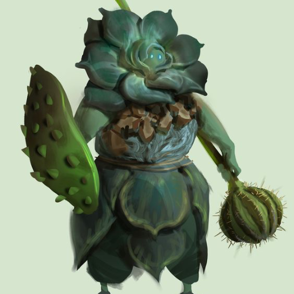
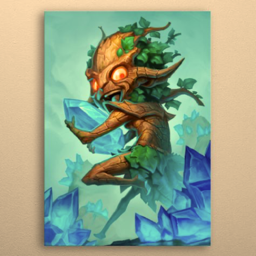
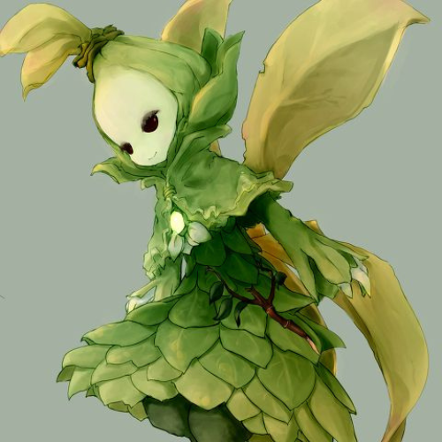
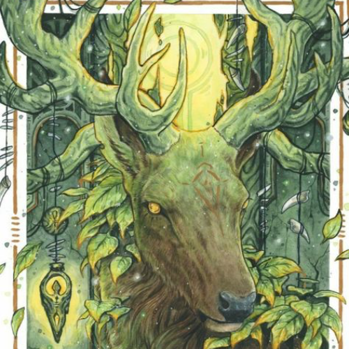
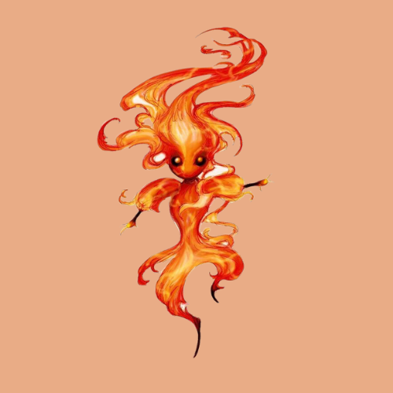

"Harmony's Last Stand" is an immersive VR fantasy adventure set in the enchanting fairytale village of Harmonyhaven...
Table of Contents
Paragraph 1: Introduction
"Harmony's Last Stand" is an immersive VR fantasy adventure set in the enchanting fairytale village of Harmonyhaven, a place where peace and serenity once flourished. However, a malevolent darkness now threatens the land, and it falls upon you and your VR companion to become the heroes who will save Harmonyhaven from impending chaos. In this cooperative VR experience, players step into the roles of valiant heroes with unique abilities. Together, you and your VR companion must defend Harmonyhaven from waves of menacing creatures led by the malevolent sorcerer, Moros, while also commanding and inspiring your armies to victory.
Paragraph 2: The Quest for Elemental Relics
As the game unfolds, players venture beyond the village's borders to collect elemental relics scattered across diverse VR environments. These relics bestow unique powers crucial for confronting Moros and his dark forces. Along your journey, you must solve environmental puzzles and face formidable mini-bosses to obtain these relics. Each relic unlocks new abilities and magic spells, not only enhancing your personal arsenal but also empowering your leadership on the battlefield as you inspire and command your troops to overcome challenges.
Paragraph 3: The Final Confrontation
With the elemental relics and newfound powers at your disposal, you and your VR companion return to Harmonyhaven for an epic showdown with Moros. This climactic VR boss battle demands cooperative gameplay, as you strategize and combine your unique abilities to defeat the evil sorcerer. Engage in dramatic combat, cast powerful spells, and execute precise attacks to save the village. Additionally, you must also lead your armies into battle, issuing orders and rallying your troops to face the overwhelming enemy forces.
Paragraph 4: A World of Harmony Restored
Following Moros' defeat, Harmonyhaven is bathed in light once more, and tranquility is restored. As a reward, players are treated to a heartwarming VR music experience. Here, you can use your VR controllers to create beautiful melodies that bring harmony back to the land. This musical finale serves as a testament to the players' success, not only in saving the village but also in leading their armies to victory. "Harmony's Last Stand" is a captivating VR adventure that combines action, magic, cooperation, and leadership, offering players an unforgettable journey to a world where heroes and commanders unite to restore peace.
Five enemy types inspired by graphics of nature, particularly trees and woodland creatures...
Five Enemy Types Inspired by Graphics of Nature:
-
Entwined Sprites
- Description: These ethereal beings are formed from twisting vines and branches, resembling humanoid figures. They possess the ability to summon thorny tendrils and launch ranged attacks.- Strategy: Coordinate with your VR companion to cut down their vines and target their weak points, while also commanding your troops to keep their distance from their ranged attacks.
-
Mossy Treants
- Description: Moss-covered treants emerge from the earth, towering over players and casting spells to entangle and slow down the heroes. Their bark-like skin acts as natural armor.- Strategy: Focus your attacks on their vulnerable roots while using your troops to distract and chip away at their defenses. Coordinate with your VR companion to unleash powerful spells to breach their bark armor.
-
Fey Sylphs
- Description: Agile and elusive, these woodland spirits appear as shimmering, ephemeral figures made of leaves and petals. They can summon gusts of wind to disorient players and their armies.- Strategy: Use quick reflexes and precise attacks to catch the fey sylphs. Encourage your troops to shield themselves from the gusts while you and your companion coordinate to close in and engage in close combat.
-
Thornbound Stags
- Description: Massive, antlered stags covered in sharp thorns charge at players and their armies with incredible speed. Their charging attacks can deal massive damage.- Strategy: Coordinate with your companion to create barriers and traps to slow down the charging stags. Send your troops to engage them at a distance while you target their thorn-covered hides.
-
Will-o'-the-Wisps
- Description: Mischievous orbs of light flit through the forest, leading players and their armies astray. When threatened, they unleash blinding bursts of light that disorient and confuse.- Strategy: Work closely with your VR companion to decipher the paths through the forest. Command your troops to stay vigilant and protect against the blinding light. Once you locate the wisps, use your abilities to capture or dispel them.
Player Abilities...
PLAYER CHEET SHEET
Player Abilities:
| Ability | PS4 Controller | Oculus Quest 2 Controller |
|---|---|---|
| Basic Attack | Press Square Button | Press A Button |
| Heavy Attack | Press Triangle Button | Press B Button |
| Dodge/Roll | Press Circle Button + Left Stick (Direction) | Press B Button + Move Head (Direction) |
| Cast Spell | Press R1 Button + Motion Control (Gesture) | Press Right Hand Trigger + Gesture with Right Hand |
| Command Troops | Hold L1 Button + Right Stick (Direction) | Hold Left Hand Trigger + Move Left Hand (Direction) |
| Inspire Troops | Press L2 Button | Press Left Hand Grip Button |
Gameplay Controller Map (PS4 Controller):
Square Button: Basic Attack
Triangle Button: Heavy Attack
Circle Button + Left Stick (Direction): Dodge/Roll
R1 Button + Motion Control (Gesture): Cast Spell
L1 Button + Right Stick (Direction): Command Troops
L2 Button: Inspire Troops
Gameplay Controller Map (Oculus Quest 2 Controller):
A Button: Basic Attack
B Button: Heavy Attack
B Button + Move Head (Direction): Dodge/Roll
Right Hand Trigger + Gesture with Right Hand: Cast Spell
Left Hand Trigger + Move Left Hand (Direction): Command Troops
Left Hand Grip Button: Inspire Troops
This cheat sheet provides clear instructions for players on how to perform various actions and abilities using both the PS4 controller and the Oculus Quest 2 controller. It ensures a smooth and immersive gaming experience in "Harmony's Last Stand."
Health System...
Harmony's Last Stand Game Mechanics
Health System:
-
Player Health (Heroes):
- Players start with a health bar that represents their own well-being.
- Health can be restored by collecting health potions found throughout the game world.
- If a player's health reaches zero, they are temporarily incapacitated and must be revived by their VR companion within a certain time frame, or the game ends.
-
Army Health:
- Each player has an army with its own collective health pool.
- Army health is displayed as a bar or a number alongside the player's HUD.
- Armies can be healed by the player using a special ability or by finding army-specific health power-ups.
-
World Health (Harmony Core):
- The world itself is represented by the Harmony Core, a magical crystal at the center of Harmonyhaven.
- The Harmony Core has its own health bar, representing the well-being of the village.
- Players must protect the Harmony Core from damage caused by enemy attacks or events in the game world.
- If the Harmony Core's health reaches zero, it's game over, and the village falls into darkness.
| Enemy | Enemy Picture | Enemy Description | Stragety over Enemy |
|---|---|---|---|
| Entwined Sprites |  |
- Description: These ethereal beings are formed from twisting vines and branches, resembling humanoid figures. They possess the ability to summon thorny tendrils and launch ranged attacks. | Strategy: Coordinate with your VR companion to cut down their vines and target their weak points, while also commanding your troops to keep their distance from their ranged attacks. |
| Mossy Treants |  |
- Description: Moss-covered treants emerge from the earth, towering over players and casting spells to entangle and slow down the heroes. Their bark-like skin acts as natural armor. | - Strategy: Focus your attacks on their vulnerable roots while using your troops to distract and chip away at their defenses. Coordinate with your VR companion to unleash powerful spells to breach their bark armor. |
| Fey Sylphs |  |
- Description: Agile and elusive, these woodland spirits appear as shimmering, ephemeral figures made of leaves and petals. They can summon gusts of wind to disorient players and their armies. | - Strategy: Use quick reflexes and precise attacks to catch the fey sylphs. Encourage your troops to shield themselves from the gusts while you and your companion coordinate to close in and engage in close combat. |
| Thornbound Stags |  |
- Description: Massive, antlered stags covered in sharp thorns charge at players and their armies with incredible speed. Their charging attacks can deal massive damage. | - Strategy: Coordinate with your companion to create barriers and traps to slow down the charging stags. Send your troops to engage them at a distance while you target their thorn-covered hides. |
| Will-o-the-Wisps |  |
- Description: Mischievous orbs of light flit through the forest, leading players and their armies astray. When threatened, they unleash blinding bursts of light that disorient and confuse. | - Strategy: Work closely with your VR companion to decipher the paths through the forest. Command your troops to stay vigilant and protect against the blinding light. Once you locate the wisps, use your abilities to capture or dispel them. |
Power-Ups:
-
Health Potion:
- Restores a portion of the player's health when collected.
- Scattered throughout the game world, health potions are vital for player survival.
- Collectible using the basic interaction control.
-
Army Healing Totem:
- A magical totem that, when activated, gradually restores the health of the player's army.
- Players must deploy the totem strategically during battles to support their troops.
- Activation is done by casting a healing spell.
-
Harmony Crystal Shard:
- These rare shards can be found in hidden locations or rewarded for completing challenging tasks.
- When collected, they restore a significant amount of the Harmony Core's health.
- Collecting all shards in a level may offer additional rewards or unlock secret content.
-
Aura of Resilience:
- A power-up that temporarily boosts the player's and their army's resistance to damage.
- Finding and activating this power-up enhances survivability during intense battles.
- Activation can be triggered by casting a specific spell.
-
Wisdom's Blessing:
- This power-up temporarily increases the player's magic power, making their spells more potent.
- It allows players to deal more damage with their magical attacks.
- Activation involves collecting the power-up and casting spells while it's active.
The combination of these health systems and power-ups adds depth to "Harmony's Last Stand," offering players strategic choices in managing their health and protecting the world. Players must make decisions about when to use their power-ups to ensure they can overcome challenges and safeguard the village of Harmonyhaven.